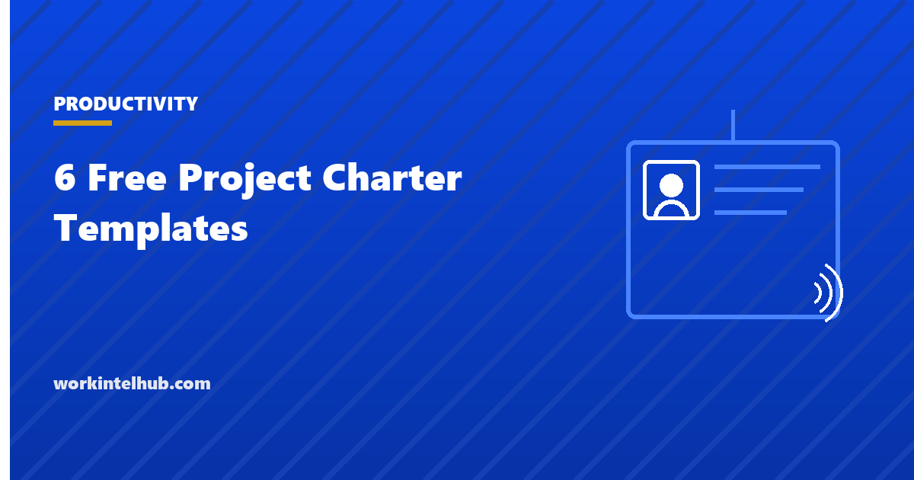

6 Free Project Charter Templates

A project charter is the document that gives a project the right to exist: a sponsor's signature that says this work is authorised, this person leads it, these are the objectives, and here is the authority and budget to pursue them. It is deliberately shorter than the plan. Its job is to settle the questions that otherwise get re-argued for months: who decides, what success means, and what the project is not.
Six versions are here, because the right charter depends on the project. A one-page charter for most work, a full charter for larger or regulated projects, an agile charter that fixes vision and constraints while leaving scope to the backlog, a programme charter that governs several projects, an internal improvement charter for operational change, and a register to hold charters across a portfolio.
Download the templates
Free files: Word, Excel and PDF
Three files, free, no email required. Word to edit, Excel to track, PDF to print or share.
Templates open in Microsoft Word, Excel, Google Docs and Sheets, LibreOffice and any PDF reader. Free to use and adapt for your organisation.
The six templates
| Charter | Use | Length |
|---|---|---|
| One-page | Most projects | One page |
| Full | Large, regulated, externally funded or multi-department projects | Three to five pages |
| Agile | Product and software work managed through a backlog | One page |
| Programme | A set of related projects with shared benefits | Two pages |
| Internal improvement | Process and operational change, Lean or Six Sigma style | One page |
| Register | Portfolio offices tracking many charters | Workbook |
The clause that makes a charter worth signing
Most charter templates omit the one section that changes behaviour: authority. What may the project manager decide alone, and what needs the sponsor? Spend within a budget line, reallocate up to ten percent between lines, accept a deliverable, change a milestone by a week: if the charter says the manager may, the project moves; if it is silent, every decision becomes a meeting. The authority matrix in the Excel workbook sets the thresholds, and the one-page charter carries them in a single field.
The second clause is the sponsor's commitment: how often they will meet the manager and how quickly they will decide. A charter signed by a sponsor who then takes three weeks to answer an email has authorised nothing.
Charters for agile and improvement work
An agile charter fixes what will not change (the team, the budget, the time box, the vision and the success measures) and leaves scope to the backlog on purpose. It should also state the definition of done and what is out of scope, because those are the questions stakeholders raise once sprints start. The agile templates carry the backlog and sprint artefacts the charter points to.
An improvement charter adds a baseline measure and a target, because an improvement project without a measured starting point cannot show it improved anything. The productivity formula and the HR metrics guides cover common baselines.
From charter to plan
- Charter first, plan second. The charter settles the what and the who; the plan settles the how.
- Keep the charter to its length; detail that belongs in the plan weakens the charter.
- Version it. A charter changed by an approved scope change is a new version, signed again.
- File it in the register so the portfolio office can see every authorised project and its sponsor.
- Read it at closeout: the objectives in the charter are what the project is judged against.
Key takeaways
- A charter authorises a project: sponsor, manager, objectives, scope, budget and, most importantly, authority.
- Choose the version by the project: one-page for most, full for large or regulated, agile for backlog-driven work, programme for sets of projects, improvement for process change.
- Write the authority matrix; a silent charter makes every decision a meeting.
- Charter before plan, versioned on approved change, judged at closeout.
Frequently asked questions
What is a project charter?
A short document in which a sponsor authorises a project, names the project manager, states the objectives, scope, deliverables, budget and milestones at a high level, and sets the manager's decision authority. It precedes the detailed plan and is signed by the sponsor and the manager.
What is the difference between a project charter and a project plan?
The charter authorises and frames the project in one to five pages; the plan describes how it will be delivered in detail, with a work breakdown, schedule, budget, risk register, communication plan and RACI. The charter is approved first and the plan is built from it.
Who signs a project charter?
The sponsor, who commits the organisation's resources and authority, and the project manager, who accepts the objectives and the authority granted. Larger projects add the steering group chair; programme charters are signed by the executive sponsor.
What should an agile project charter contain?
The vision, target users and outcomes, success measures, the fixed constraints (team, budget, time box), the product owner and team, the release cadence, the definition of done and what is out of scope. Scope itself is left to the backlog by design.
How long should a project charter be?
One page for most projects. Full charters for large, regulated or multi-department projects run three to five pages. If a charter is longer than that, detail has crept in from the plan.